Les recettes
Nos recettes sont une invitation au voyage, pas une vérité absolue : il en existe d'autres, et c'est tout ce qui fait la richesse de notre cuisine.
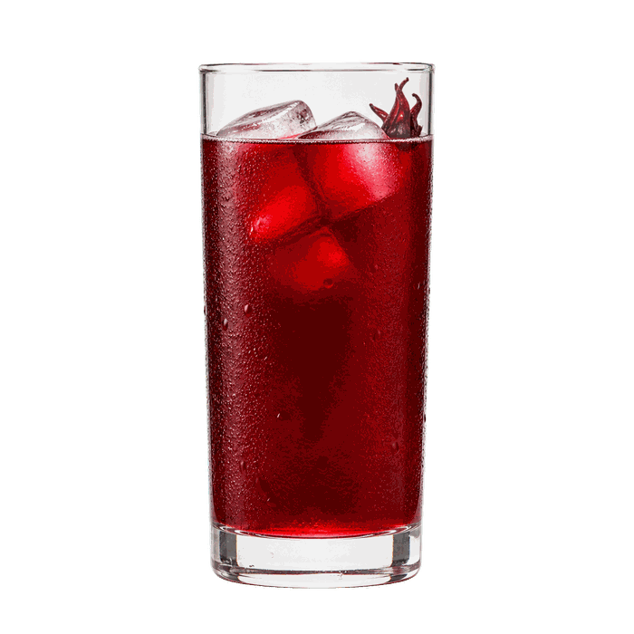
Bissap15 minVoir la recette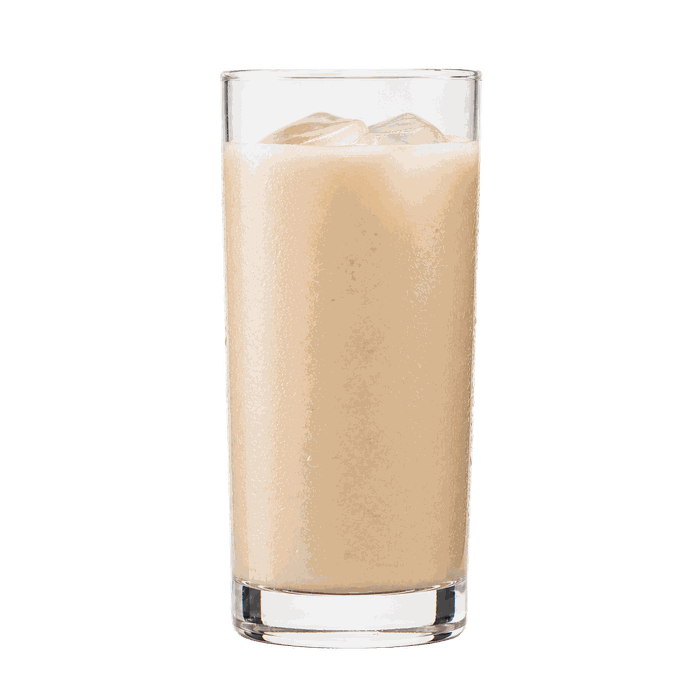
Bouye15 minVoir la recette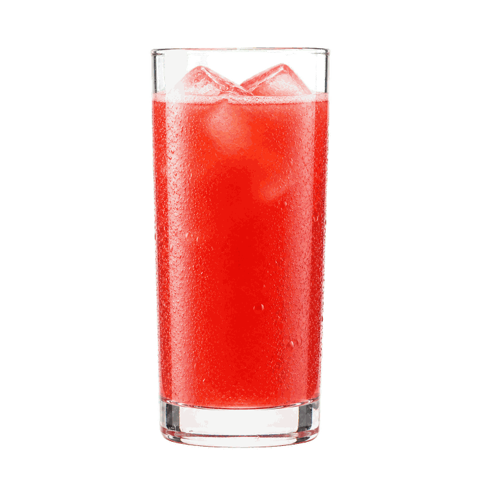
Jus de pastèque10 minVoir la recette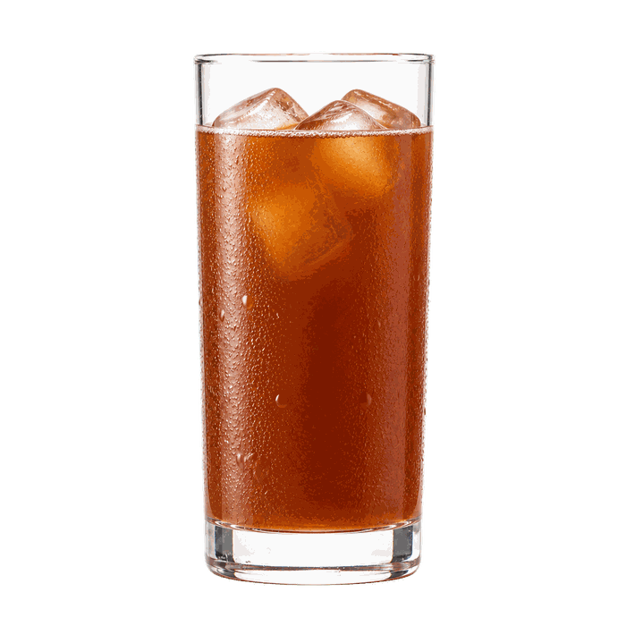
Jus de tamarin10 minVoir la recette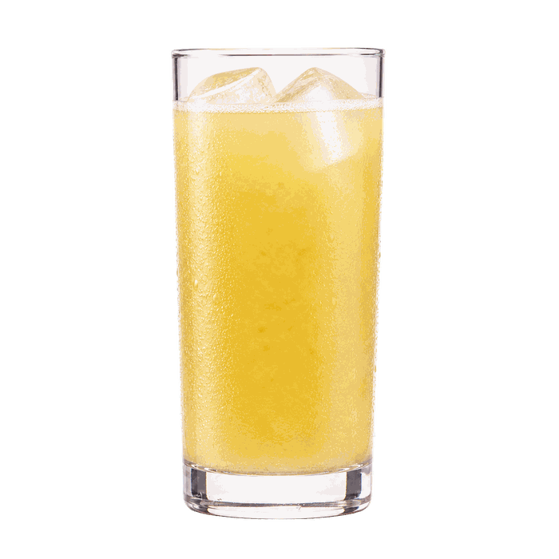
Tangawissi (Gnamakoudji)15 minVoir la recette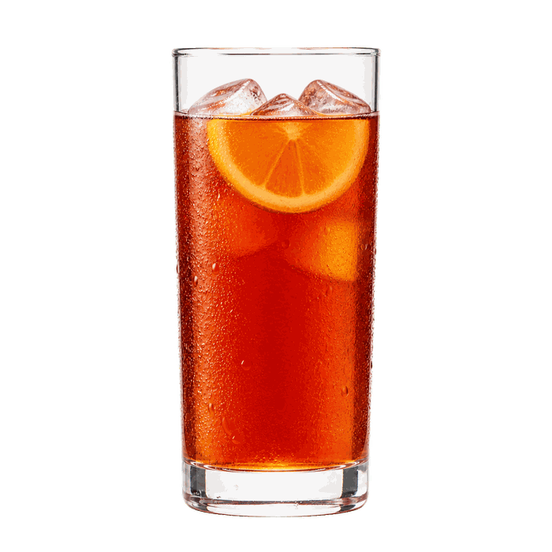
Thé glacé au rooibos5 minVoir la recetteFaites glisser pour voir plus
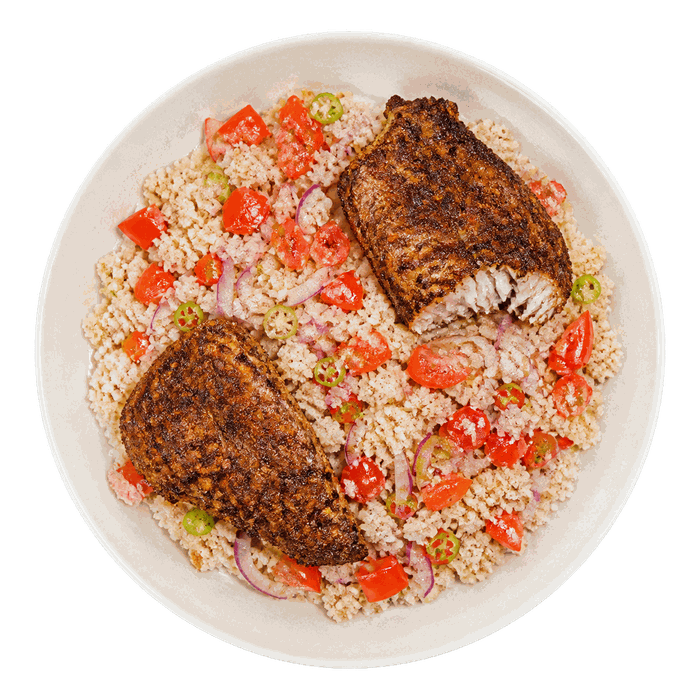
Garba30 minVoir la recette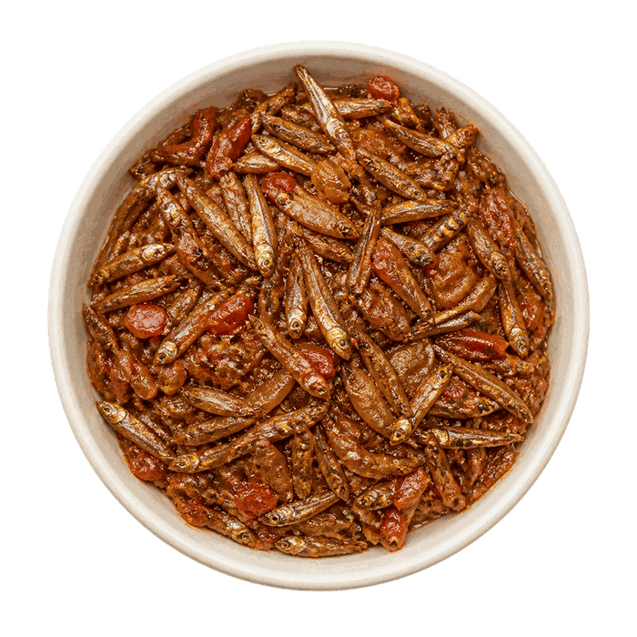
Kapenta35 minVoir la recette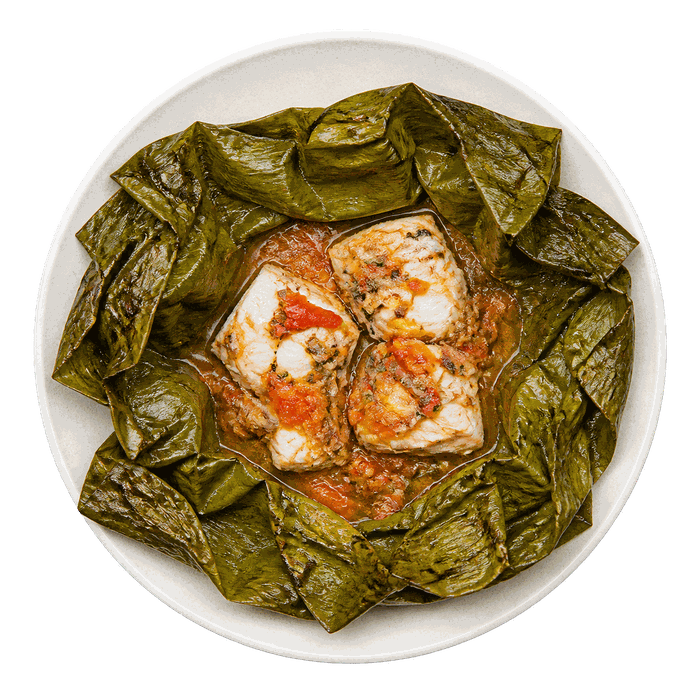
Liboké1 h 10Voir la recette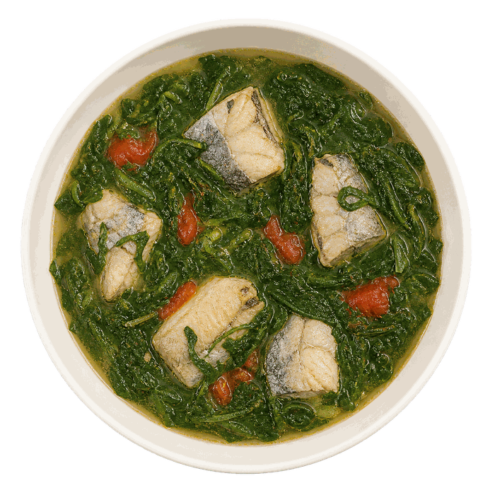
Romazava au Poisson50 minVoir la recette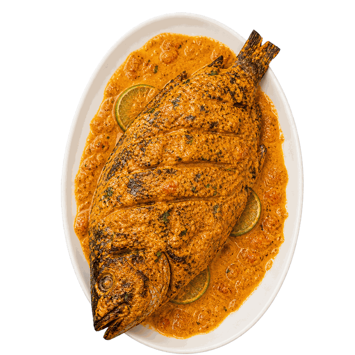
Samaki Wa Kupaka45 minVoir la recette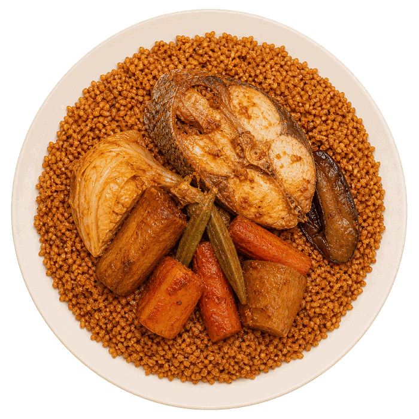
Thiéboudienne1 h 55Voir la recetteFaites glisser pour voir plus